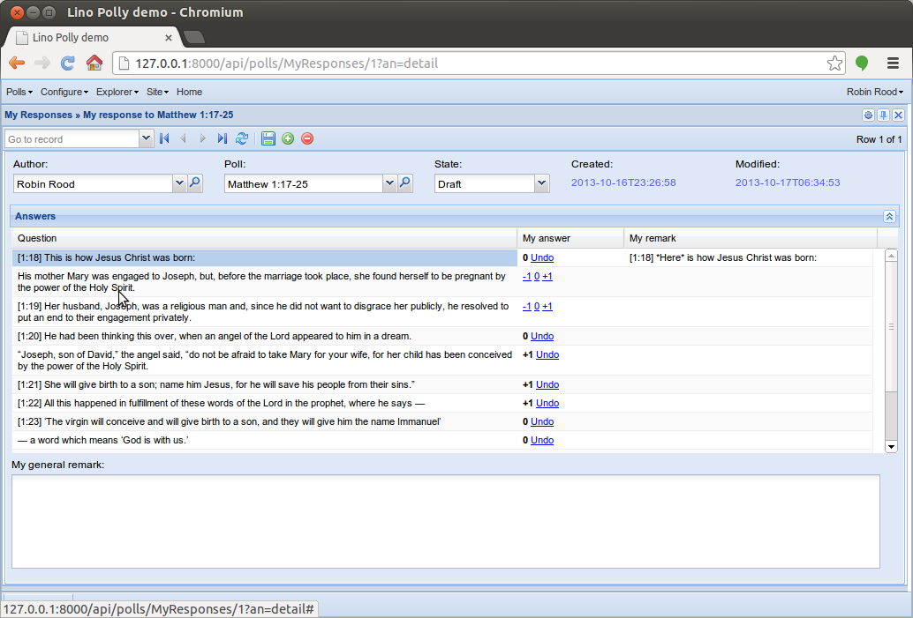

20131017 (Thursday, 17 October 2013)¶
Cool, Lino has two new features (needed for Lino Polly but probably useful for many other projects):
The clickable “-1”, “0” and “+1” links are a usage example for the new
put_buttonmethod.Actorhas a new overrideable class methodget_detail_title. This was used to replace the window title“My responses » Robin Rood’s response to Matthew 1:17-25”
by
“My responses » My response to Matthew 1:17-25”
Miscellaneous¶
After reading Translated text images for lazy programmers and the comments, I updated my Multilingual database content page and did some internal tidy-up in the source code.
Adapted test suite after this tidy-up (and the changes for Lino Polly).
Fixed a bug: Invoking lino.modlib.reception.GoneVisitors caused a “FieldError: Invalid order_by arguments: [‘gone_since-‘]”
lino.ui.store.Store: an actor with editable=False doesn’t need a DisabledFieldsStoreField. Removed it because it had caused the following traceback when trying to openlino.modlib.ledger.models.Vouchers:TRACEBACK: File "/home/luc/pythonenvs/py27/local/lib/python2.7/site-packages/django/core/handlers/base.py", line 115, in get_response response = callback(request, *callback_args, **callback_kwargs) File "/home/luc/pythonenvs/py27/local/lib/python2.7/site-packages/django/views/generic/base.py", line 68, in view return self.dispatch(request, *args, **kwargs) File "/home/luc/pythonenvs/py27/local/lib/python2.7/site-packages/django/views/generic/base.py", line 86, in dispatch return handler(request, *args, **kwargs) File "/home/luc/hgwork/lino/lino/ui/views.py", line 903, in get rows = [ rh.store.row2list(ar,row) for row in ar.sliced_data_iterator] File "/home/luc/hgwork/lino/lino/ui/store.py", line 1214, in row2list v = fld.full_value_from_object(row,request) File "/home/luc/hgwork/lino/lino/ui/store.py", line 470, in full_value_from_object for name in self.store.actor.disabled_fields(obj,ar): File "/home/luc/hgwork/lino/lino/core/dbtables.py", line 733, in disabled_fields return obj.disabled_fields(ar) File "/home/luc/hgwork/lino/lino/mixins/__init__.py", line 336, in disabled_fields if not self.state.editable:DjangoJinjaTemplatenow adds a namear(containing aBaseRequest) which is now required by base.html (which is used by 500.html)
To-Do-Liste Sven¶
Kalenderansicht: Klick auf einen Tag im date picker (dem kleinen Monatskalender oben links) sollte auf den betreffenden Tag springen, tut er aber nicht. Behoben.
Kurse mit ausgefülltem Datum “Endet am” taten nicht unbedingt das was man gedacht hatte, weil ich da fälschlicherweise zwei Bedeutungen ins gleiche Feld gepackt hatte. Jetzt haben wir zwei Felder:
- Endet am : wann der Termin endet. Dieses Feld sollte leer bleiben, wenn der Termin am gleichen Tag endet. Wird gebraucht bei mehrtägigen Veranstaltungen sowie für Ferientermine.
- Termine generieren bis : bis wann Termine generiert werden. Also wann der Kurs endet.
Die Liste der “Kalender” in der Kalender-Ansicht entsteht aus der Liste der “Abonnements”, die jeder Benutzer selber anlegt. Jedes Abonnement ergibt einen Kalender. Neues Filterkriterium “Raum”.
Der Button “Team-Ansicht” war inzwischen unnütz und wurde entfernt.
Stattdessen ist die Kalenderliste wieder da.

{kind=link}